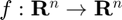
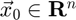

fixed_point_n
Fixed-point iteration for finding the fixed point of a multivariate, vector-valued function.
Back to Root-Finding Toolbox Contents.
Contents
Syntax
c = fixed_point_n(f,x0) c = fixed_point_n(f,x0,opts) [c,k] = fixed_point_n(__) [c,k,x_all] = fixed_point_n(__)
Description
c = fixed_point_n(f,x0) returns the fixed point of a multivariate, vector-valued function  specified by the function handle f, where x0 () is an initial guess of the fixed point.
c = fixed_point_n(f,x0,opts) does the same as the syntax above, but allows for the specification of optional solver parameters. opts is a structure with fields detailed in the "Input/Output Parameters" section below.
[c,k] = fixed_point_n(...) also returns the number of iterations (k) performed of fixed-point iteration.
[c,k,c_all] = fixed_point_n(...) does the same as the previous syntaxes, but also returns an array (c_all) storing the fixed point estimates at each iteration. This syntax requires that opts.return_all be set to true.
Input/Output Parameters
| Variable | Symbol | Description | Format | |
| Input | f | univariate, scalar-valued function ( |
1×1 function_handle |
|
| x0 | initial guess for fixed point | n×1 double |
||
| opts | - | (OPTIONAL) solver options with fields:
- k_max → maximum number of iterations (defaults to 200) - return_all → returns estimates at all iterations if set to true (defaults to false) - TOL → tolerance (defaults to |
1×1 struct |
|
| Output | c | fixed point of |
1×1 double |
|
| k | number of iterations | 1×1 double |
||
| c_all | fixed point estimates at all iterations | n×(k+1) double |